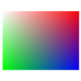

Tracking#
Tracking is used to follow individual predictions over multiple images of a image sequence, for example to follow cell movement. The tracking mode can be switched on and off in the postprocessing window.
Turn on tracking mode#
After enabling the tracking mode, the tracking panel is shown in the main window.
The tracking panel#
Note
Tracking can only performed with images from the test folder. If you would like to calculate tracking load the target folder as test folder.
In general, there are 2 options for image tracking. Either the target sequence consists of single images in a folder or an image stack with multiple frames can be used.
Caution
It is not supported to combine individual images and image stacks.
It is recommended to first finish or correct the predictions and perform tracking as the final step, however labels can also be changed after tracking was performed.
Press ** Calculate Tracking** to perform object racking based on Hungarian Algorithm [1]. Objects with the same number present in different images are considered as the same object.
{kind=link}
Tip
Tracking is calculated from the first image to the last. When checking for corrections go from first to the last image and correct potential errors in between.
Color Coding sets an individual color for each object. Unchecking Color Coding sets the color of each object to their class color. Note that the object number is always in the corresponding class color.
Show Track shows all previous positions of each object as a line.
Current shape and the previous positions shown as a tracking line of a detected cell#
To assign a new object number to a detected object use  and press with left_mouse on the target object, type the target object number in the opened window.
{kind=link}
Note
If you assign an existing object number to an object, a new number is assigned to the object that previously had that number.
To change the color of an object select  and press on the target object and select a new color.
{kind=link}
To completely remove an object, meaning in all images where that object occurs, press  (in the tracking panel) and press on the object that you would like to remove. To remove an object only in the current image use the from the tools panel.
(in the tracking panel) and press on the object that you would like to remove. To remove an object only in the current image use the from the tools panel.
Note
When tracking mode is activated, the positions of each object are exported when saving results.